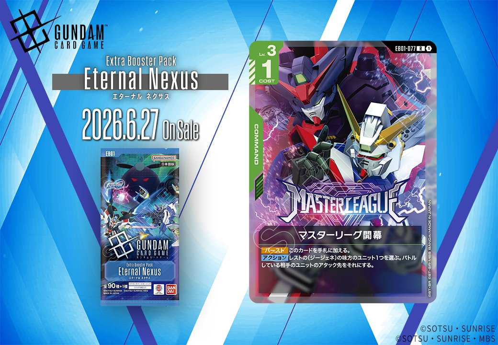
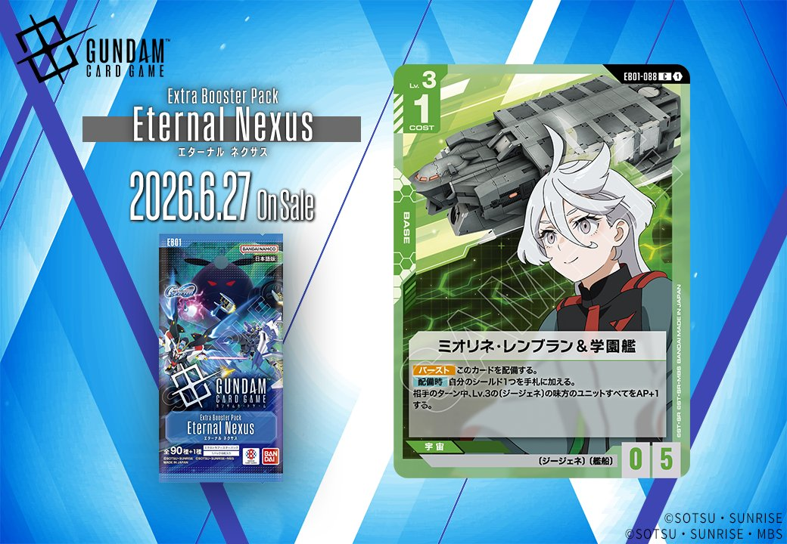

今回はEB01「Eternal Nexus」から2枚、GD05「Freedom Ascension」から1枚の計3枚の新カードをご紹介します。緑のCOMMANDカード「マスターリーグ開幕」と緑のBASEカード「ミオリネ・レンブラン & 学園艦」は2026年6月27日発売、赤のUNITカード「シャイニングガンダム」は2026年7月25日発売予定です。

シャイニングガンダム (GD05-042)
| 色 | 赤 | タイプ | UNIT |
| Lv | 2 | コスト | 1 |
| AP | 2 | HP | 2 |
| 特徴 | 〔MF〕、〔シャッフル同盟〕 | ||
Lv.2でCOST1/AP2/HP2というバニラユニットは赤色の序盤展開要員として標準的なスペック。特徴〔MF〕〔シャッフル同盟〕を持つため、同日発売のガンダムローズとリンクすることで【リンク中】の能力を発動でき、セットしているカードのメイン効果を【アタック時】に使える組み合わせが可能。ただし単体では効果を持たないため、リンクやコマンドとの組み合わせ前提での採用となるだろう。


マスターリーグ開幕 (EB01-077)
| 色 | 緑 | タイプ | COMMAND |
| Lv | 3 | コスト | 1 |
| 特徴 | 〔ジージェネ〕 | ||
効果: 【バースト】このカードを手札に加える。【アクション】レストの〔ジージェネ〕の味方のユニット1つを選ぶ。バトルしている相手のユニットのアタック先をそれにする。
マスターリーグ開幕は、レストの〔ジージェネ〕ユニットを強制的にアタックターゲットに変更できる緑のコマンドカード。バースト効果で手札に加えられるため、相手の攻撃に対する防御札として機能し、〔ジージェネ〕デッキでは味方ユニットを守る重要な選択肢となる。 コスト1という軽さとバーストによる手札補充を兼ね備えており、〔ジージェネ〕特化デッキの防御面を支える実用的なカードと言えるだろう。



ミオリネ・レンブラン & 学園艦 (EB01-088)
| 色 | 緑 | タイプ | BASE |
| Lv | 3 | コスト | 1 |
| AP | 0 | HP | 5 |
| 特徴 | 〔ジージェネ〕、〔艦船〕 | ||
効果: 【バースト】 このカードを配備する。【配備時】 自分のシールド1つを手札に加える。相手のターン中、Lv.3の〔ジージェネ〕の味方のユニットすべてをAP+1する。
ミオリネ・レンブラン & 学園艦はLv.3でCOST1という低コストながら、配備時にシールドを手札に加える防御的なベース。相手ターン中にLv.3の〔ジージェネ〕ユニットすべてにAP+1を付与する効果は、同レベル帯の味方を一斉強化でき、相手の計算を狂わせる守備的な運用が期待できる。関連カードの資源衛星パラオと同じくシールド回収効果を持つため、緑単色デッキでの防御基盤として活躍しそうだ。

関連カード
-
 ガンダムローズ(GD05-044)NEW赤系 — 同色・共通特徴: MF、シャッフル同盟（新カード）
ガンダムローズ(GD05-044)NEW赤系 — 同色・共通特徴: MF、シャッフル同盟（新カード） -
 格闘戦(ST03-013)赤系デッキ内採用率24.7% (792デッキ)
格闘戦(ST03-013)赤系デッキ内採用率24.7% (792デッキ) -
 GQuuuuuuX（オメガ・サイコミュ起動時）(GD03-034)赤系デッキ内採用率21.4% (684デッキ)
GQuuuuuuX（オメガ・サイコミュ起動時）(GD03-034)赤系デッキ内採用率21.4% (684デッキ) -
 戦技の向上(GD03-109)赤系デッキ内採用率17.2% (551デッキ)
戦技の向上(GD03-109)赤系デッキ内採用率17.2% (551デッキ) -
 資源衛星パラオ(GD01-128)赤系デッキ内採用率12.4% (397デッキ)
資源衛星パラオ(GD01-128)赤系デッキ内採用率12.4% (397デッキ) -
 オプションパーツ(EB01-079)NEW緑系 — 同色・共通特徴: ジージェネ（新カード）
オプションパーツ(EB01-079)NEW緑系 — 同色・共通特徴: ジージェネ（新カード） -
 ヅダ（1番機）(EB01-037)NEW緑系 — 同色・共通特徴: ジージェネ（新カード）
ヅダ（1番機）(EB01-037)NEW緑系 — 同色・共通特徴: ジージェネ（新カード） -
 マリナ・イスマイール&プトレマイオス2(EB01-087)NEW緑系 — 同色・共通特徴: ジージェネ（新カード）
マリナ・イスマイール&プトレマイオス2(EB01-087)NEW緑系 — 同色・共通特徴: ジージェネ（新カード） -
 ライジングフリーダムガンダム(EB01-039)NEW緑系 — 同色・共通特徴: ジージェネ（新カード）
ライジングフリーダムガンダム(EB01-039)NEW緑系 — 同色・共通特徴: ジージェネ（新カード） -
 ピースミリオン(GD03-125)緑系デッキ内採用率15% (481デッキ)
ピースミリオン(GD03-125)緑系デッキ内採用率15% (481デッキ)